Instructions for installing mods through the Steam Workshop:
- Run the game while Steam is running, and open the Mods menu from the main menu. 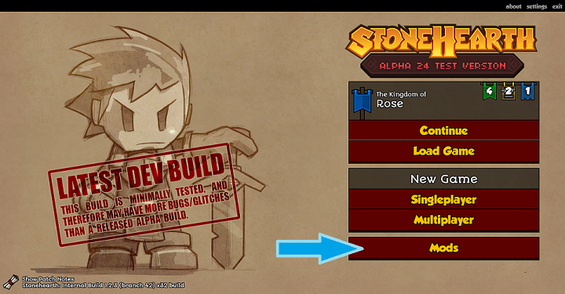
- You should see a "Browse Steam Workshop" button on top of the second list. 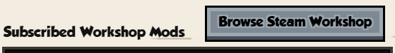
- The Steam overlay will open and show the Workshop. Browse items in the workshop, and when you see a mod that you like, click on the "Subscribe" button.
 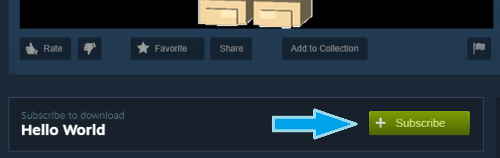
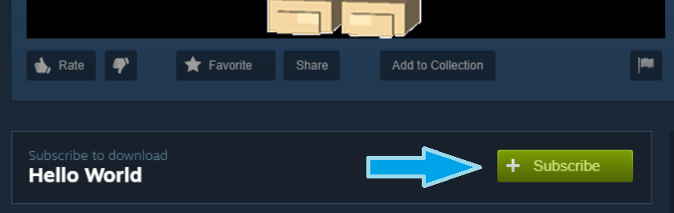 - The mod should start downloading. Return to the game, and you should see the mod listed in the Workshop mods list. You might see a download progress bar in the list item if it takes a while to download. 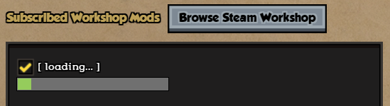
- Make sure it is checked / enabled after it finishes downloading. 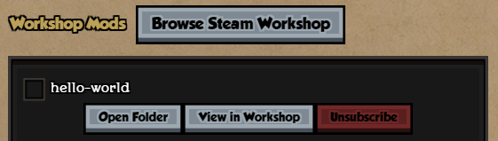
- Accept to reload when returning to the main menu, so that the downloaded mods are loaded.

Instructions for uninstalling mods from the Steam Workshop:
If you subscribed to a mod from the Steam Workshop, you can uninstall it from within the game:
- Go to the Mods menu from the main menu, and find the mod you wish to uninstall.
- Hover over it, and click on "Unsubscribe from mod" (the red X button). Alternatively, you can click on "View mod in workshop" (the button with the Steam icon) and unsubscribe from the Workshop itself. 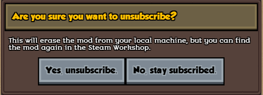
- The mod will be effectively deleted from your computer once you completely exit the game. There might be empty folders left, that's the way Steam handles unsubscribing.
For reference, the Workshop mods you subscribe to are downloaded inside this location: C:\Program Files (x86)\Steam\steamapps\workshop\content\253250. Since they're not in the usual Stonehearth mods folder, you can hover over them in the Mods menu and click on "Open mod folder" (the button with the folder icon), if you need to browse them.

 Bear in mind that savefiles that were made with that mod active will throw errors if you try to load them after uninstalling it (same if you disable the mod instead of removing it).
Bear in mind that savefiles that were made with that mod active will throw errors if you try to load them after uninstalling it (same if you disable the mod instead of removing it).
Instructions for uploading mods to the Steam Workshop:
Workshop mods require a Steam file ID so they must be created from our UI in order to generate it. They can't be uploaded in zip/smod or any compressed format.
Go to the Mods menu from the main menu, and click on the "Create New Mod" button above the third column. 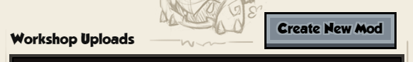
Fill the required fields: 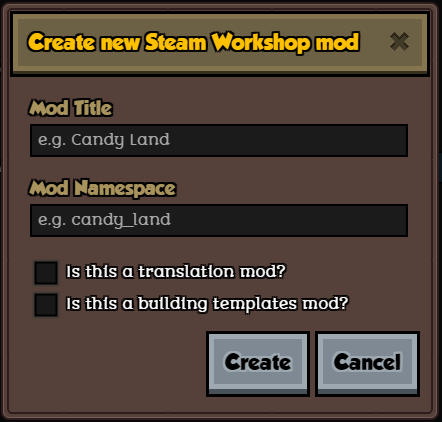 A title/name for your mod and a namespace. The namespace can only contain alphanumeric characters, hyphens and underscores. Spaces and other characters are not allowed. Try to keep it short and unique.
If your mod is going to be exclusively a translation mod, check the "Is this a translation mod?" checkbox. This will add a special tag that will allow different players to keep their own translation mods active when they join a multiplayer game, so that each player can play in their own language.
If your mod is going to add building templates, check the "Is this a building templates mod?" checkbox. This will add a special tag that will allow you to add building templates to your mod very easily. More instructions here.
Click on "Create". This will create the mod folder and a pre-filled manifest for you. The mod will appear in the Workshop Uploads list, and the mod folder will be automatically opened so you can start adding content to it. 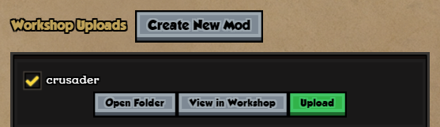

The Workshop mods that you upload will live inside its own folder ("steam_uploads") instead of inside the "mods" folder. Don't copy them there because you will get a conflict inside the game (having two mods with the same namespace), and you would have to disable or remove one of them.
You can browse your new mod in the workshop right now, but its visibility will be hidden so that you can add content to it before making it public. It might take a while for Steam to update the workshop, however, so you might see a blank page for a while. 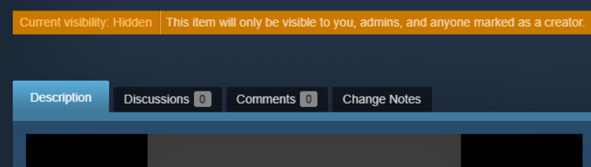
Add content to your mod.
Once you're satisfied with your mod, go to the Mods menu once again and hover over your mod in the Workshop Uploads list. Click on the "Upload mod to workshop" button (the green icon with the arrow).
A new form will appear. 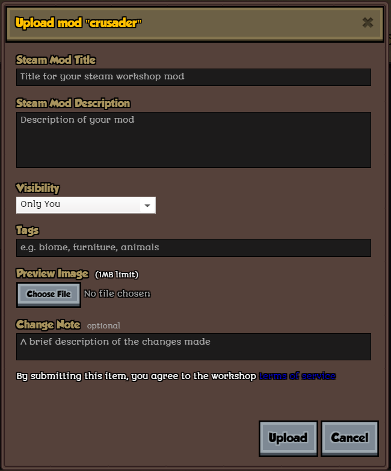 Fill in the title (it'll be the name displayed at the Workshop, can be different than your mod's title/inner name), a description for your mod, change the visibility if you want to (by default it'll be Public, unlike when we created the mod), and optionally add some custom tags (separated by commas), upload a preview image, or add some initial changelog notes. Make sure you agreed to the terms of service too before proceeding.
Click on Upload. The mod will start uploading to Steam (a progress bar will be shown in the list), and once it's finished, the Steam overlay will automatically open, showing your mod in the Workshop. 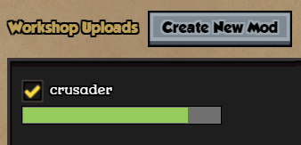
Next time you change your mod's content, you can click on "Update" from the Mods menu and change any field from that form, and the contents of the mod will get updated to the workshop.
Make sure your manifest is valid before trying to upload or update your mod to the workshop. No error messages should appear in the Mods menu for your mod.
You can develop your mod inside the mods folder instead of the steam_uploads folder if you want, then create a new mod from the Mods menu so that a Steam file ID is generated, copy paste your mod contents to that folder, and edit the auto-generated manifest to include the missing keys. But you'll have to disable or remove the one in the mods folder after uploading it to Steam, since the game will consider it a conflict (you'll have 2 mods with the same namespace).
Instructions for uploading building templates as a mod:
The mods menu includes an easy way to redistribute a pack of building templates as a mod.
First create a mod as explained above, and make sure to check the "Is this a building templates mod?" checkbox. Once it appears in the Workshop Uploads list, click on the "Edit this mod's list of templates" button, which has an icon for editing templates.
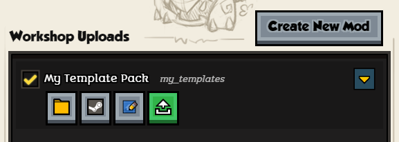
A new window will appear and let you choose from your existing building templates:
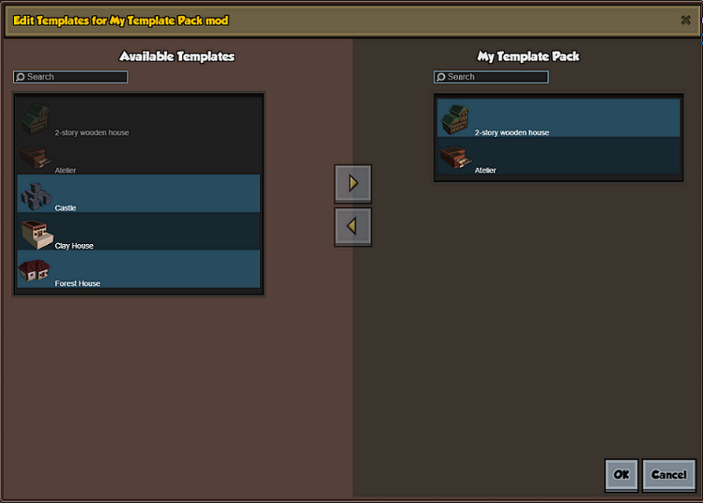
 The templates will be copied to your mod, but they won't be deleted from the main game. If you later decide to add other templates, or remove some of them your mod, you can do so through this menu too (only the templates from your mod will be affected by the deletion).
The templates will be copied to your mod, but they won't be deleted from the main game. If you later decide to add other templates, or remove some of them your mod, you can do so through this menu too (only the templates from your mod will be affected by the deletion).
Once you click 'OK', a confirmation dialog will appear: 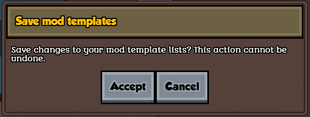 In the mods list, there will be an arrow button at the right for the mods that have building templates. Clicking on it will expand / collapse the list of templates that the mod has (which is convenient if you need to see which templates are in which mod): 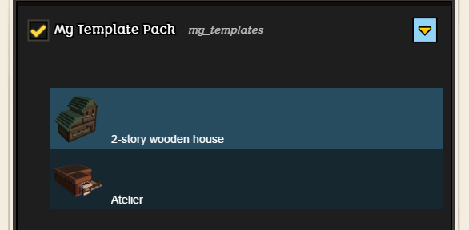 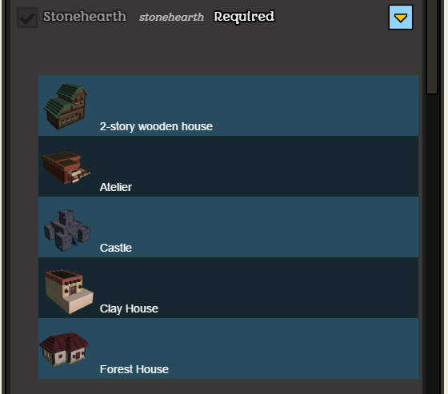
Lastly, remember to upload your mod to the Workshop like explained in the above section (step 9 onwards). The "Building Templates" tag will appear automatically for your mod in the upload form.
The game will show the templates from these mods in the building editor's template list as expected.